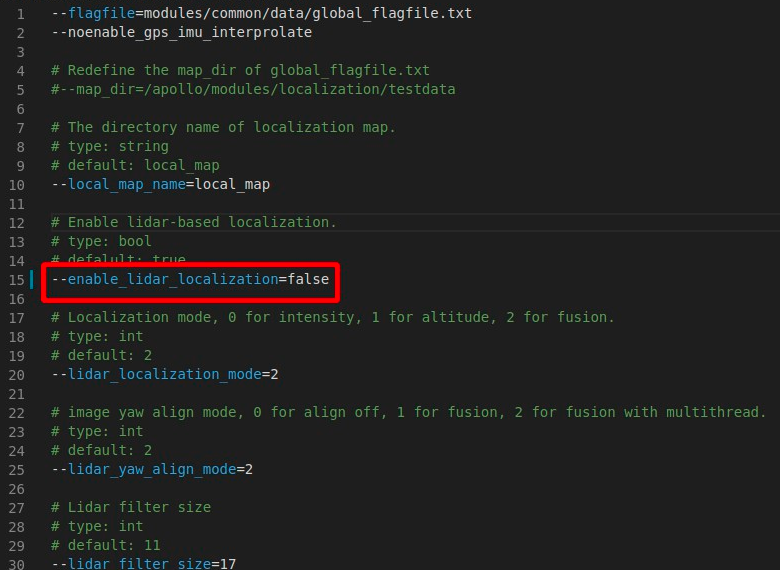
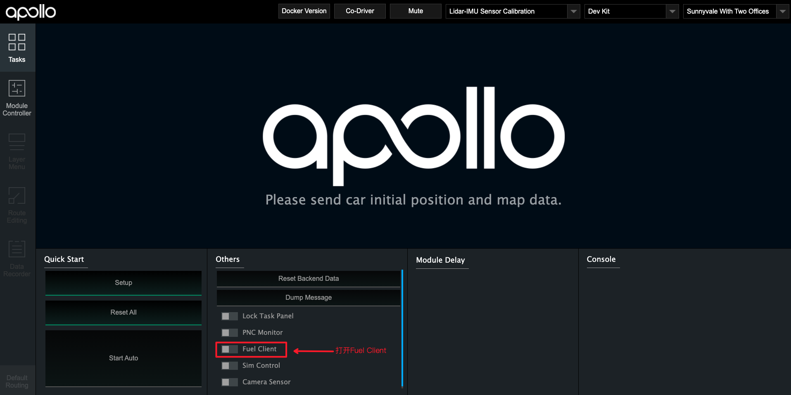
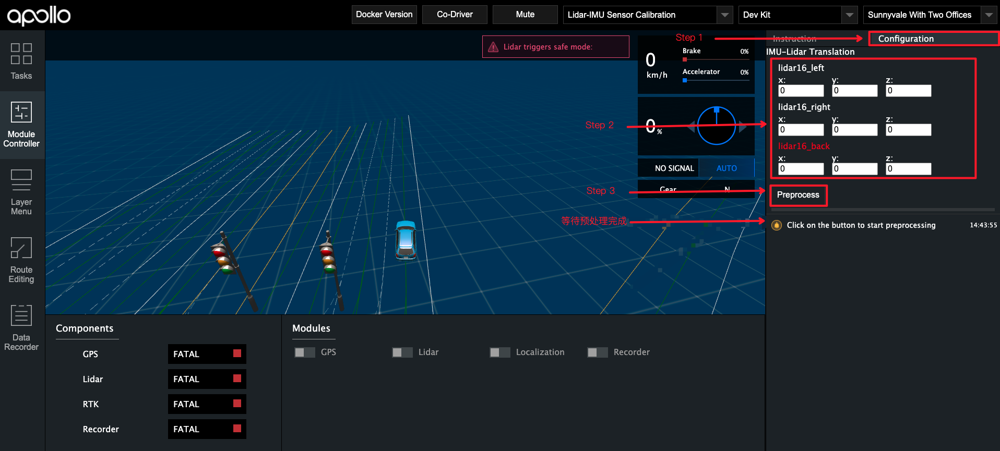
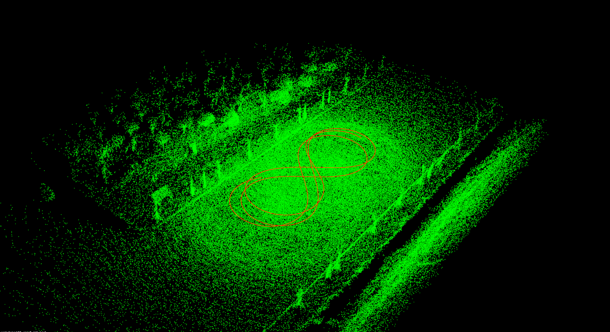

基于激光雷达的封闭园区自动驾驶搭建–感知设备标定¶
概览¶
该用户手册旨在帮助用户完成激光雷达的标定(Lidar-GNSS)
前提条件¶
完成了循迹搭建–车辆循迹演示
完成了开通云服务账号向导
修改配置文件¶
修改文件名称 |
修改内容 |
|---|---|
|
|
注意： 上表中车型目录需要用户根据自身车型确认。lite用户为dev_kit，standard用户为dev_kit_standard，单激光雷达的advanced用户为dev_kit_advanced_ne-s，3激光雷达的advanced用户为dev_kit_advanced_sne-r

**注意：**所有传感器标定完成后，如果用户要使用msf定位，则需要再改为true。
Lidar-GNSS标定初始外参测量¶
各传感器坐标系的定义及初始化外参文件的配置
1. IMU、Lidar的坐标系定义¶


4. 手动测量Lidar-GNSS的初始化外参¶
这里默认用户按照感知设备集成文档的要求正确安装了传感器，即传感器坐标系的定义与上文中的定义相同，且安装误差满足文档中的要求。
rotation:在传感器的安装满足上述安装要求的情况下，用户无需测量该值，可直接使用如下的默认值即可
rotation: w: 0.7071 x: 0.0 y: 0.0 z: 0.7071translation:用户需要手动测量以IMU坐标系为基坐标系，以激光雷达坐标系为目标坐标系的位移变换，一个IMU-Velodyne16位移变换的示例如下所示：
translation: x: 0.0 y: 0.38 z: 1.33
标定场地选择¶
标定场地会直接影响到标定效果。对标定场地有如下要求
标定场地中心8米范围内需要有轮廓清晰的静态参照物，如电线杆、建筑物、车辆，避免过多动态障碍物。如果静态障碍物距离较远，会严重影响标定效果
确保路面平坦
能确保GNSS信号良好，不要有过多的干扰
使用Fuel-Client采集数据¶
1. 选择正确的模式、车型¶
选择
Lidar-GNSS Sensor Calibration模式根据实际情况选择正确的车型(lite用户选择
Dev Kit车型，standard用户选择Dev Kit Standard，单雷达的advanced用户选择Dev Kit Standard Ne-s，3雷达的advanced用户选择Dev Kit Standard Sne-r)
2. 启动Fuel Client，并启动相应模块¶
在dreamview的
Tasks标签下，首先打开Sim Control，然后打开Fuel Client，Fuel Client打开后务必关闭Sim Control在dreamview的
Module Controllers标签下，启动GPS、Lidar、Localization模块，等待左侧状显示模块中的GPS、Lidar、RTK均为绿色时，代表模块启动成功(Localization启动后，需要等待1~2分钟才能正常输出数据)。
3. 启动Recorder模块并开始采集¶
当左侧左侧状显示模块中的
GPS、Lidar、RTK均为绿色时，打开Recorder模块，并开始采集数据，需要控制车辆以8字形轨迹缓慢行驶，并使转弯半径尽量小 ，包含2~3圈完整的8字轨迹数据。
数据采集完成后，关闭
Recorder模块停止数据录制
使用Fuel Client进行数据预处理¶

点击右上角的
Configuration进入预处理界面填入测量的初始化外参
点击
Preprocess进行预处理等待预处理完成,提示
Data extraction is completed successfully!代表预处理完成
注意 对于使用3激光雷达的advanced用户，需要填入3个雷达的初始化外参，其中红色的lidar16_back参数为main_sensor(主激光雷达)的外参

保存生成的预处理文件。切换到
apollo/output/sensor_calibration/lidar_to_gnss/extracted_data/目录，保存该目录下的lidar_to_gnss-xxx文件(xxx为数据包录制的时间)，这里和下文以lidar_to_gnss-2021-01-12-14-10为例
使用标定云服务生成外参文件¶
1. 上传预处理后的数据至BOS¶
注意： 必须使用开通过权限的 bucket，确认Bucket名称、所属地域和提交商务注册时的Bucket名称和所属区域保持一致。
将lidar_to_gnss-2021-01-12-14-10目录上传到BOS的根目录下，作为后续云标定服务读取数据的输入数据路径。
2. 提交云标定任务¶
打开Apollo云服务页面，新建一个任务，如下图所示：

点击新建任务后，在下拉框中选择感知标定选项，根据实际情况填写输入输入数据路径，这里以lidar_to_gnss-2021-01-12-14-10为例，指定输出数据路径后，点击提交任务(Submit Job)按钮提交。

3. 获取标定结果验证及标定外参文件¶
云标定任务完成后，将在注册的邮箱中收到一封标定结果邮件。如果标定任务成功，将包含标定外参文件。
Lidar-GNSS标定结果验证：
BOS中用户指定的
输出文件路径下包含了后缀名为.pcd的点云文件，使用点云查看工具检查pcd文件，如果点云文件中周围障碍物清晰、锐利，边缘整齐表示标定结果准确，否则请重新标定。

在ubuntu系统下，可以使用
pcl-tools工具查看点云文件
sudo apt-get update
sudo apt-get install pcl-tools
pcl_viewer xxx.pcd
Lidar-GNSS标定外参文件：
确认得到的外参文件合理后，将获取的外参文件的rotation、translation的值替换掉modules/calibration/data/车型目录/lidar_params/velodyne16_novatel_extrinsics.yaml中对应的rotation、translation值。注意不要修改frame_id、不要直接替换文件。
NEXT¶
现在，您已经完成激光雷达感知设备标定，接下来可以开始封闭园区自动驾驶搭建–虚拟车道线制作